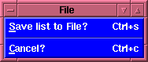

List of Selected Items Window
List of Selected Items Window
The "List of Selected Items" window first appears as simply a
blank window. During its creation several bindings are made to
various mouse buttons when the focus is in a specific
window. Since the "List of Selected Items" window can be
associated with ANY listbox and has to operate closely with the
parent window in which that listbox is contained, the mouse
bindings which are defined allow the two listbox's (the one in
the "List of Selected Items" window, and the one in the calling
window) to be intimately associated.
It is important for the user to realize that while in the
following example we are talking about the "File selection
window" the SAME mouse bindings are made in ANY window which
calls this procedure, and the listbox associated with this
window is the listbox in the calling window.
For conveniences sake we will assume that the "List of
Selected Items" window is associated with the
"File selection window". So
when the "List of Selected Items" window is first created it
binds the right-most-mouse-button (from the calling listbox)
to populate the "List of Selected Items" window. Thus if in
the "File selection" window the user points at a file, and
presses the right-most-mouse-button the name of the file will
appear in the "List of Selected Items" window. (See below.)
We see that the full path has been prepended to the filename
that was selected - please note that the
left-most-mouse-button in the "File selection" window remains
associated ONLY with the "File selection" window, and only
when the right-most-mouse-button is pressed in the "File
selection" window, does the filename
get added to the "List of Selected Items" window. (Note the
the user can also keep this button depressed and drag the
cursor to select multiple files - they are added upon release
of the button.) If the user
wished to remove an item from the "List of Selected Items"
window, all that is necessary is to press the
left-most-mouse-button when over the item that is wished to be
removed. (Note that the user can also keep this button
depressed and drag the cursor to de-select multiple files -
they will be removed upon release of the button.)
Thus the user can creat a list of items (in the above case
these items are filenames and their associated paths).

Once the user has a list of selected items then the user can
turn to the Menubottons which are available to manipulate this
list.
The File menu:
If the user selects the File menu the following will be
displayed:

We see here that there are two options that can be
selected.
- Save list to File? (also accessible by pressing
Control-s):
This option allows the user to save the selected items to a
file. However, the behavior differes depending upon how the
List of Selected items window was called, and as a
result what exactly is being stored in the file being
created. Thus what happens at this point
may be:
- Cancel (also accessible by pressing Control-c):
This option closes the "List of Selected Items" window, and
unbinds the associated mouse-keys.
The Help menu:
If the user selects the Help menu the following list
of options will be presented:
- About making a list (also accessible by
pressing Control-h):
This displays the on-line help window associated with the
"List of Selected Items" window, i.e., the hypertext
document you are presently viewing.
- All Topics available (also
accessible by pressing Control-a):
Displays the hypertext
help available on all Topics, i.e., a general INDEX
of available help pages for Flaunch are displayed,
allowing the user to select which windows or
behavior they wish to learn about.
INDEX
Brian K. Elza
Last modified: Mon Jul 28 14:48:01 EDT